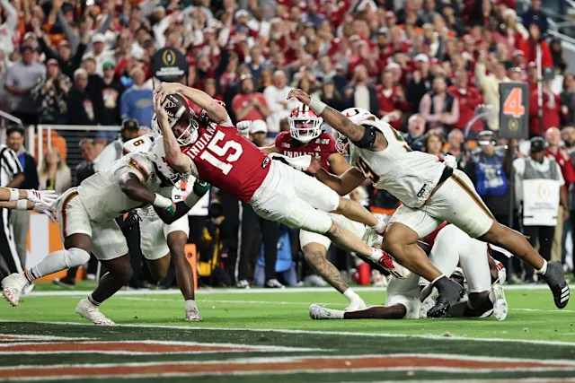

The college football playoff was instituted in 2014 to replace the Bowl Championship Series (BCS). Until the 2024 season, the playoff included only the top 4 teams at the end of the season, after which it was expanded to include 12 teams. At the end of the 2026 season, the CFP Comittee may choose to change the format once again. The College Football Playoff has been a source for controversy since its inception, and many believe that it leaves much to be desired.
The Indiana Hoosiers won the College Football Playoff for the 2025-2026 season.